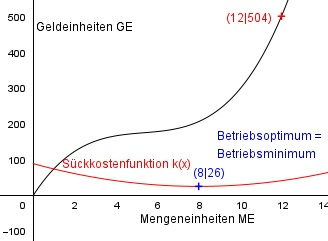

Aufgabe 149 Ein Produzent hat Grenzkosten von 38 GE bei 2 ME, Stückkosten von 42 GE bei 4 ME, Gesamtkosten von 504 GE bei 12 ME, und Betriebsoptimum und Betriebs- minimum fallen zusammen. Er stellt diesen Zusammenhang durch eine ganzrationale Kostenfunktion dar. Bei welcher ME treten Betriebsoptimum und Betriebsminimum auf?  Betriebsoptimum und Betriebsminimum fallen zusammen bedeutet: Stückkostenfunktion = variable Stückkostenfunktion, keine Fixkosten k(x) = kv(x) --> d = 0 K(x) Kv(x) ax3 + bx2 + cx k(x) = kv(x) = ------ = ------- = ----------------- = ax2 + bx + c x x x Allgemeine Form einer ertragsgesetzlichen Kostenfunktion 3. Grades: K(x) = ax3 + bx2 + cx + d K’(x) = 3ax2 + 2bx + c K’’(x) = 6ax + 2b 3 Bedingungen: 1. Hat Grenzkosten von 38 GE bei 2 ME bedeutet: K’(2) = 38 --> 3a * 22 + 2b * 2 + c = 38 --> 12a + 4b + c = 38 I 2. Stückkosten von 42 GE bei 4 ME bedeutet: k(4) = 42 --> a * 42 + b * 4 + c = 42 --> 16a + 4b + c = 42 II 3. Gesamtkosten von 504 GE bei 12 ME bedeutet: K(12) = 504 --> a * 123 + b * 122 + c * 12 = 504 --> 1728a + 144b + 12c = 504 III I * (-1) + II -12a - 4b - c = -38 16a + 4b + c = 42 -------------------- 4a = 4 |:4 a = 1 I * (-12) + III -144a - 48b - 12c = -456 1728a + 144b + 12c = 504 -------------------------- 1584a + 96b = 48 IV a = 1 in IV eingesetzt: 1584 + 96b = 48 |-1584 96b = -1536 |:96 b = -16 a = 1 und b = - 16 in I eingesetzt: 12 * 1 + 4 * (- 16) + c = 38 12 - 64 + c = 38 -52 + c = 38 |+52 c = 90 Gesuchte Kostenfunktion: K(x) = x3 - 16x2 + 90x Das Betriebsminimum ist das Minimum der variablen Stückkostenfunktion kv(x): kv(x) = x2 - 16x + 90 k(v)’(x) = 2x - 16 | +16 2x = 16 |:2 x = 8 ME k’’(x) = 2 > 0 --> Minimum k(8) = 82 - 16 * 8 + 90 = 26 Betriebsoptimum und Betriebsminimum liegen bei 8 ME und 26 GE.